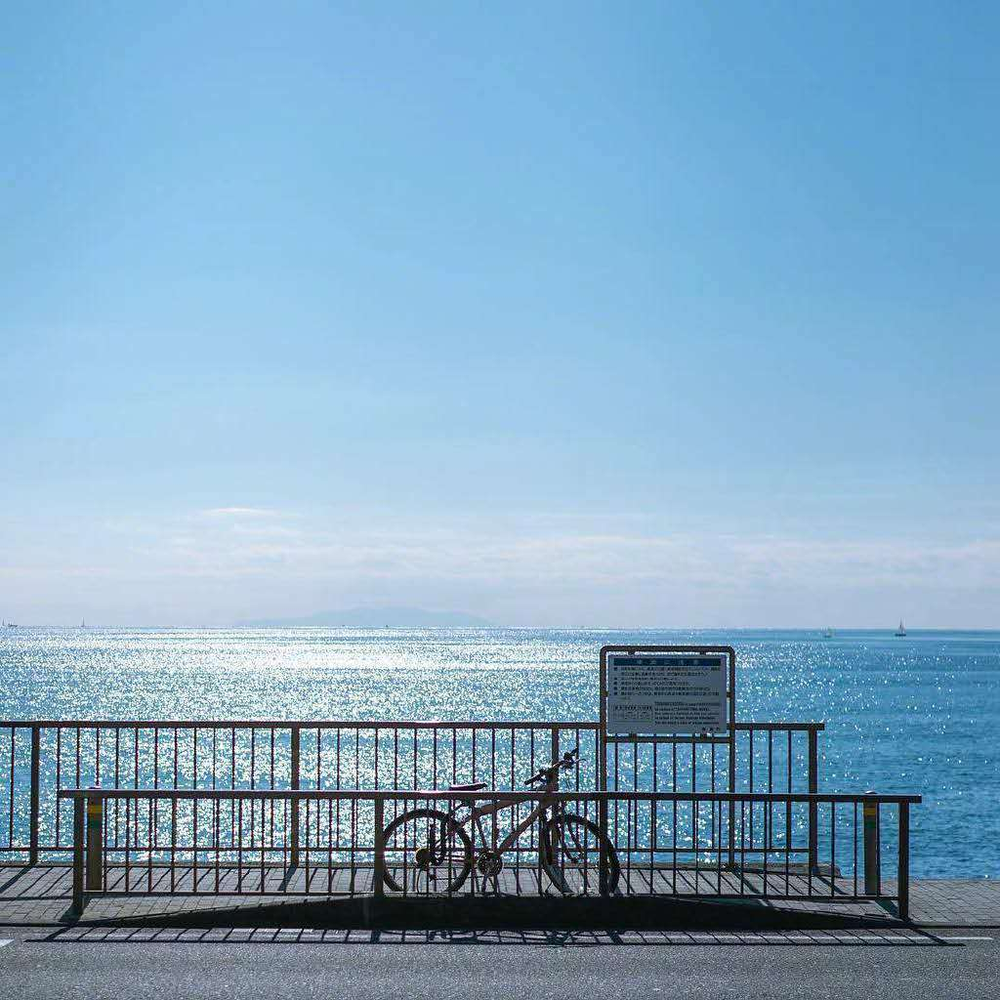

<!DOCTYPE html>
<html>
<head><meta name="generator" content="Hexo 3.9.0">
  <meta charset="utf-8">
  
  <title>about | Hexo</title>
  <meta name="viewport" content="width=device-width, initial-scale=1, maximum-scale=1">
  <meta name="description" content="Hi，我是Flipped  &amp;nbsp;&amp;nbsp;&amp;nbsp;&amp;nbsp; &amp;nbsp;&amp;nbsp;&amp;nbsp;&amp;nbsp;一个游走于文艺边缘的菜鸟程序猿，没有好看的皮囊，也没有有趣的灵魂。理科的命，却偏偏长了一个文艺心，喜欢目前的搬砖生活，艰难的行走在成为技术大大的路上；也喜欢诗和远方，一天天总梦想着星辰和大海；喜欢运动，整天嚷嚷叫嚣着要拯救中国男篮；喜欢户外，但至今只背包徒步过武功山和库布齐">
<meta property="og:type" content="website">
<meta property="og:title" content="about">
<meta property="og:url" content="http://yoursite.com/about/index.html">
<meta property="og:site_name" content="Hexo">
<meta property="og:description" content="Hi，我是Flipped  &amp;nbsp;&amp;nbsp;&amp;nbsp;&amp;nbsp; &amp;nbsp;&amp;nbsp;&amp;nbsp;&amp;nbsp;一个游走于文艺边缘的菜鸟程序猿，没有好看的皮囊，也没有有趣的灵魂。理科的命，却偏偏长了一个文艺心，喜欢目前的搬砖生活，艰难的行走在成为技术大大的路上；也喜欢诗和远方，一天天总梦想着星辰和大海；喜欢运动，整天嚷嚷叫嚣着要拯救中国男篮；喜欢户外，但至今只背包徒步过武功山和库布齐">
<meta property="og:locale" content="en">
<meta property="og:image" content="http://yoursite.com/images/WechatIMG84.jpeg">
<meta property="og:updated_time" content="2019-09-06T06:45:13.382Z">
<meta name="twitter:card" content="summary">
<meta name="twitter:title" content="about">
<meta name="twitter:description" content="Hi，我是Flipped  &amp;nbsp;&amp;nbsp;&amp;nbsp;&amp;nbsp; &amp;nbsp;&amp;nbsp;&amp;nbsp;&amp;nbsp;一个游走于文艺边缘的菜鸟程序猿，没有好看的皮囊，也没有有趣的灵魂。理科的命，却偏偏长了一个文艺心，喜欢目前的搬砖生活，艰难的行走在成为技术大大的路上；也喜欢诗和远方，一天天总梦想着星辰和大海；喜欢运动，整天嚷嚷叫嚣着要拯救中国男篮；喜欢户外，但至今只背包徒步过武功山和库布齐">
<meta name="twitter:image" content="http://yoursite.com/images/WechatIMG84.jpeg">
  
  <link rel="stylesheet" href="/css/index.css">
</head>
</html>
<body style="


  background-color: #eff0f6

">
  <div id="container">
    <nav id="nav">
  <header class="header">
    <a href="/" class="title">Flipped</a>
  </header>
  <div class="ctnWrap">
    <div class="icons">
      
        
          
            · <a href="https://blog.csdn.net/zlb_lover" target="_blank" class="nav-icn">CSDN</a>
          
        
          
            · <a href="https://github.com/zlbonly" target="_blank" class="nav-icn">GitHub</a>
          
        
      
    </div>
    <div class="menu">
      
        
            <a href="/" class="nav-menu ">HOME</a>
          
        
            <a href="/archives" class="nav-menu ">ARCHIVE</a>
          
        
            <a href="/about" class="nav-menu z-active">ABOUT</a>
          
        
      
    </div>
  </div>
</nav>
    <div id="main"><section class="article">
  <article class="content">
    <h4 id="Hi，我是Flipped"><a href="#Hi，我是Flipped" class="headerlink" title="Hi，我是Flipped"></a>Hi，我是Flipped</h4><p> <br> &nbsp;&nbsp;&nbsp;&nbsp; &nbsp;&nbsp;&nbsp;&nbsp;一个游走于文艺边缘的菜鸟程序猿，没有好看的皮囊，也没有有趣的灵魂。理科的命，却偏偏长了一个文艺心，喜欢目前的搬砖生活，艰难的行走在成为技术大大的路上；也喜欢诗和远方，一天天总梦想着星辰和大海；喜欢运动，整天嚷嚷叫嚣着要拯救中国男篮；喜欢户外，但至今只背包徒步过武功山和库布齐沙漠，希望明年有时间能去趟 雨崩/北疆的那拉提/稻城和亚丁；也喜欢读书和电影，钟爱<a href="https://v.qq.com/x/cover/997m2fipgc6erv7.html?ptag=10521" target="_blank" rel="noopener">《Flipped》</a>，<a href="https://book.douban.com/subject/1200840/" target="_blank" rel="noopener">《平凡的世界》</a>。这就是我，“唯愿此生尽兴，赤诚善良!”</p>

  </article>
</section></div>
    <footer id="footer" class="f-cf">
  友链
  
    
      
        · <a href="https://dribbble.com/clovertuan" target="_blank" class="nav-icn">Wu</a>
      
    
  
  <span class="copyright">All rights reserved @Flipped</span>
</footer>
  </div>
</body>
</html>